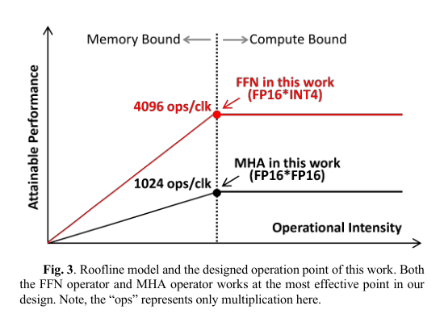
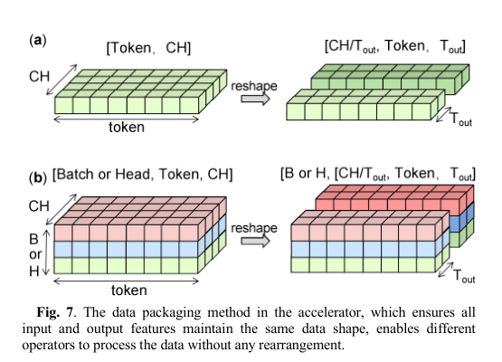
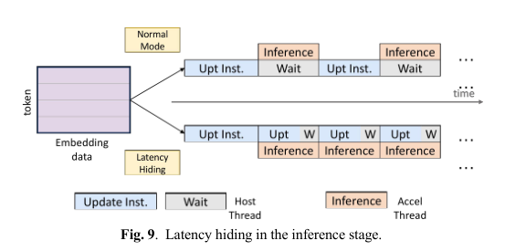

本报告由大模型自动生成，可能存在理解、归纳或数据转述错误；请以原论文为准。 EdgeLLM: A Highly Efficient CPU-FPGA Heterogeneous Edge Accelerator for Large Language ModelsMingqiang Huang, Ao Shen, Kai Li, Haoxiang Peng, Boyu Li, Yupeng Su, Hao Yu · IEEE Transactions on Circuits and Systems I Regular Papers · 2025 · 原文 · PDF 报告模型：gemini-3.1-pro-preview / high 这是一份关于《EdgeLLM: A Highly Efficient CPU-FPGA Heterogeneous Edge Accelerator for Large Language Models》论文的详细解读。文章提出了一种用于边缘设备的大语言模型硬件加速方案，通过软硬件协同设计解决了边缘场景下内存带宽和计算效率的瓶颈。 贯穿全文的主线边缘设备（如机器人等功耗受限的本地终端）需要部署 LLM（Large Language Models，大语言模型），但目前的 LLM 严重依赖 GPU（Graphics Processing Unit，原文未定义/未说明全称）。GPU 存在功耗高（>200W）、资源开销大的问题；而传统的 FPGA（原文未定义/未说明全称及具体解释）由于 LLM 巨大的参数量和复杂的算子类型，面临严重的访存墙和编译调度难题。为解决这一问题，本文作者提出了一种名为 EdgeLLM 的 CPU-FPGA 异构加速器。硬件层面上，作者设计了混合精度计算阵列和对数尺度稀疏性，以充分利用（fully utilize）硬件的计算和访存带宽；软件层面上，作者设计了统一的数据格式以消除算子间的数据重排开销，并设计了延迟隐藏的编译机制。最终，该系统在边缘场景下实现了超越当前 GPU 和先进 FPGA 加速器（如 FlightLLM）的吞吐量和能效。 第一部分：导言与背景 (Introduction & Background)自 Transformer 架构提出以来，人工智能领域逐渐被大语言模型主导。Transformer 依赖于自注意力机制（Self-Attention，一种允许模型在处理当前数据时动态关注序列中其他位置信息的算法），打破了传统 CNNs（convolutional neural networks，卷积神经网络）和 RNNs（recurrent neural networks，循环神经网络）在并行能力上的限制。然而，当模型参数量达到数十亿（如文中提到的 6B 或 7B 模型，其中 6B 或 7B 代表矩阵乘法中权重参数的数量，原文未定义/未说明 B 的具体全称和数值含义，常识为 Billion 即十亿参数）时，会产生极重的计算和内存访问负担。 背景补充：在深度学习推理中，为了将巨大的模型塞入边缘设备的内存，通常会使用模型量化技术（Quantization），将原本 FP16（原文未定义/未说明全称）格式表示的权重参数压缩为 INT4（原文未定义/未说明全称，通常指 4 位整数）格式。然而，为了保证模型最终输出的准确度，推理过程中产生的中间激活值（Activation）通常仍需要保持在 FP16 格式。 这给硬件加速器带来了两个核心挑战：
针对上述问题，作者提出了 EdgeLLM 架构。 第二部分：硬件设计 (Hardware Design)为了打破上述瓶颈，作者设计了包含 CPU、主存 DDR（原文未定义/未说明全称，用于存储激活数据等）、HBM（High Bandwidth Memory，高带宽内存，本文用于存储 INT4 权重和 FP16 KVcache）以及 FPGA 加速器 IP 核的异构系统（如图 2 所示）。CPU 作为系统大脑，通过 PCIe（Peripheral Component Interconnect Express）总线和 AXI lite 协议（原文未定义/未说明具体解释）控制 FPGA 内部寄存器，而大批量数据传输则通过 AXI-full 协议进行。为了最大化利用内存带宽，作者特别为 MHA 算子构建了一组 DMA（Direct Memory Access，直接内存访问）专用路径，将在线生成的 KVcache 直接写回 HBM，从而使 MHA 也能利用 HBM 的极高带宽。 1. 混合精度计算单元 (Mix-Precision Computing PEs)为了在计算和访存之间找到最优平衡点，作者使用了 Roofline 模型（一种将操作强度 operational intensity 作为横轴，单位 TFLOP/Bytes；可达性能 achievable performance 作为纵轴，单位 TFLOP/s，以直观展示系统是受限于内存带宽还是计算能力的分析工具，如图 3 所示）。本文使用的 FPGA HBM 接口单周期可提供 8192 bits 带宽（32 个 AXI 端口，每个端口 256 bits）。  作者的设计逻辑与约束：为了完全吃满这 8192 bits 的数据，且不被计算单元拖后腿，作者将计算模块的并行度翻倍。具体而言，他们让负责与 HBM 通信的 DMA 模块运行在 280MHz 的高频时钟下，而核心计算阵列运行在 140MHz 的低频时钟下。这意味着在计算阵列的一个时钟周期内，HBM 能够提供 bits 的数据。 以此为基准：
底层微架构采用 G-VSA（grouped vector systolic computing array，分组向量脉动计算阵列，一种按行将数据传输进处理单元的架构，比传统 TPU（原文未定义/未说明全称）的广播式阵列功耗和面积更小）。数据流被巧妙地拆分为四个流水线阶段：在阶段 1 中，分离出 FP16 和 INT4 数据的符号位（S）、指数位（E）和尾数位（M）（单位原文均未说明），并将尾数相乘（保留全部精度避免丢失小数细节）；在阶段 2 中，基于指数差进行对齐移位，送入 19 位宽的加法树进行累加（19 位是作者在资源消耗和避免溢出间做出的权衡选择）；在阶段 3 中，通过 LZA（Leading Zero Anticipate，前导零预测）重新规格化为浮点数并乘以初始缩放因子（Scale）。表 1 的实验表明，与将中间结果转换为 FP16 或自定义 FP20 的基线方法相比，该混合精度单元不仅节省了最高 49.1% 的芯片面积，且计算错误率降至极低的 0.047%。 2. 对数尺度结构化稀疏 (Log-scale Sparsity)稀疏化指利用模型参数中存在的大量趋近于零的值，直接跳过零乘法以加速计算。非结构化稀疏在硬件上极难实现，而商用 GPU 使用的固定比例稀疏（如每 4 个数中强行保留 2 个非零数）效率虽高但降低了内存访问灵活性。 作者提出了硬件友好的“对数尺度结构化稀疏”，支持 1/2、1/4、1/8 等不同层级的稀疏度。其规则是：每 8 个相邻数据块中必须包含至少 个零（ 的取值范围和单位原文未说明）。在 HBM 中，数据被打包压缩（如图 5 所示），每个数据包顺序存放量化缩放参数（Scale，单位：原文未说明）、记录非零位置的掩码（Mask，单位：原文未说明）和实际的权重数据（wt，单位：原文未说明）。 架构与 EDA 之间的数据结构反馈：在体系结构与 EDA 的跨层接口中，传递的量包括不同算子层的稀疏度级别（如 50%、75%、87.5%）以及对应的掩码编码方式（独热编码或块内地址编码）；目标或约束是减少掩码的存储开销并提高硬件计算单元的利用率（达到 100%）；建模假设是不同算子层具有不同的稀疏度分布（例如 QKVO 层为 50% 稀疏度，h-to-4h 层为 75% 稀疏度）；信息损失表现为算法精度（Perplexity 和 Zero-shot Accuracy）的轻微下降。如何存储掩码（Mask）对存储开销影响极大。作者根据稀疏度的高低，设计了一种混合编码方案：
第三部分：软件设计 (Software Design)硬件设计完成后，如何将复杂的 AI 模型图（Operator Graph）高效映射到硬件上，是编译器的核心任务。 1. 统一数据格式在诸如 ChatGLM 这样的模型中，MHA 模块需要处理 Query（查询）、Key（键）、Value（值）矩阵（）。其中 矩阵维度为 ， 矩阵维度为 ， 矩阵维度为 ，元素含义分别为查询、键、值特征，来源为输入分别乘以权重矩阵 得到，单位原文未说明。这些矩阵沿 Head（多头）维度进行切分和转置（例如计算 ，其中上标 表示转置，单位原文未说明）。如果在内存中 矩阵的地址不连续，硬件流水线就会产生严重的停顿。 作者的解决方案：设计了一种通用的 3D/4D 张量表示法。所有的激活数据被强制重塑为 的形状（其中 表示通道数， 表示数据通道方向的并行度， 表示序列长度； 的单位原文均未说明；下标 原文未说明具体含义）。 为什么要采用这个特定的形状？这源于 AXI 总线协议的硬性约束：AXI 突发传输（burst transfers，指在单次事务中传输多个连续数据的能力，原文未定义/未说明“一次地址握手后”等细节）的数据宽度被固定为 位。通过将张量的最后一个维度刚好设为 ，使得内存中连续的地址块刚好对应张量的物理连续维度。这样一来，无论算子如何变化，编译器都可以在不进行任何底层数据重排（rearrangement）的情况下，利用这种分段连续的地址特征完成等效的矩阵转置操作（如图 7 所示）。  2. 软件架构与延迟隐藏在 LLM 推理（Inference）阶段，输入的文本长度（Token 长度）是动态变化的，这会导致频繁的内存地址重计算。
编译器引入了  第四部分：实验结果与评估 (Experimental Results)系统在 AMD Xilinx VCU128 平台上完成了综合与实现。评估主要基于开源的 ChatGLM-6B 和 Qwen-7B 两个大语言模型。
局限性补充说明：作者在文末诚实地指出了目前设计的局限性。LLM 中的旋转位置编码（Rotary Embedding）算子通常因模型而异，目前若要兼顾通用性只能交回给 CPU 串行处理，速度较慢。此外，目前芯片上所有的算子是按时间顺序（temporal-mode）串行执行的，上一个算子完全结束才会启动下一个，暂不支持流水线式的算子间并行。这些是未来能够继续压榨性能的空间。 总结本文针对边缘场景下大语言模型部署所面临的功耗高、存储受限的问题，从硬件微架构（混合精度组向量阵列、对数结构化稀疏）出发填补了精度和硬件利用率间的鸿沟，并通过软件编译器层面的创新（强制统一的 3D 张量结构与 AXI 突发传输特性的硬绑定）彻底消除了算子间内存重排的开销。最终以较低的硬件代价换取了超越数据中心级 GPU 的边缘推理能效。 |